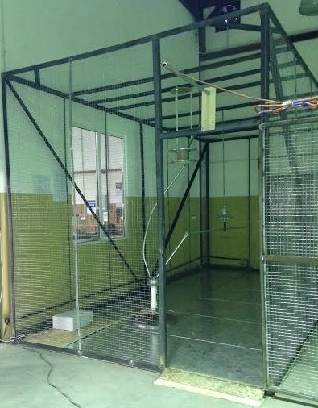
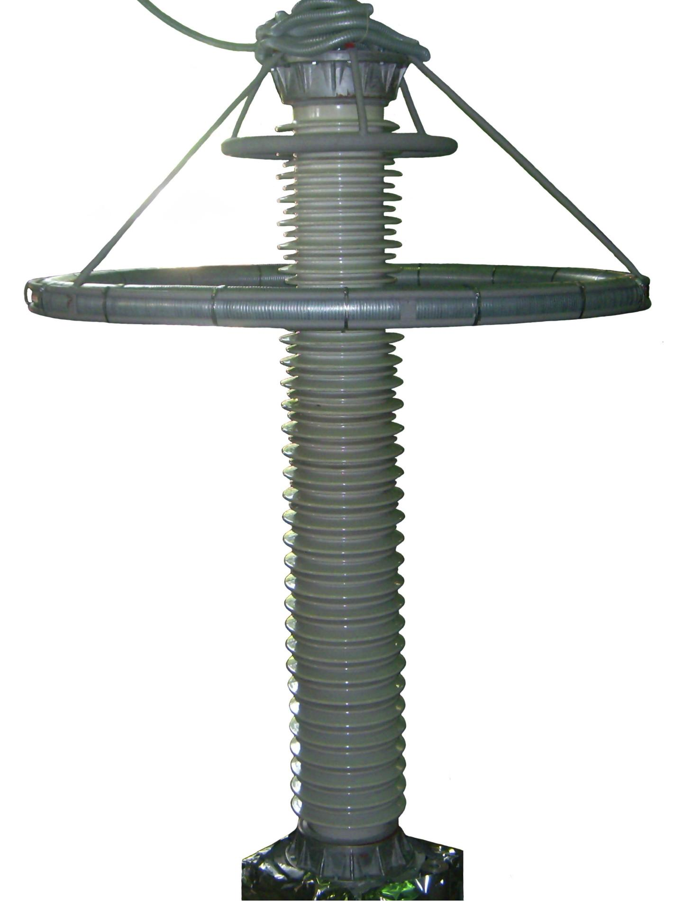
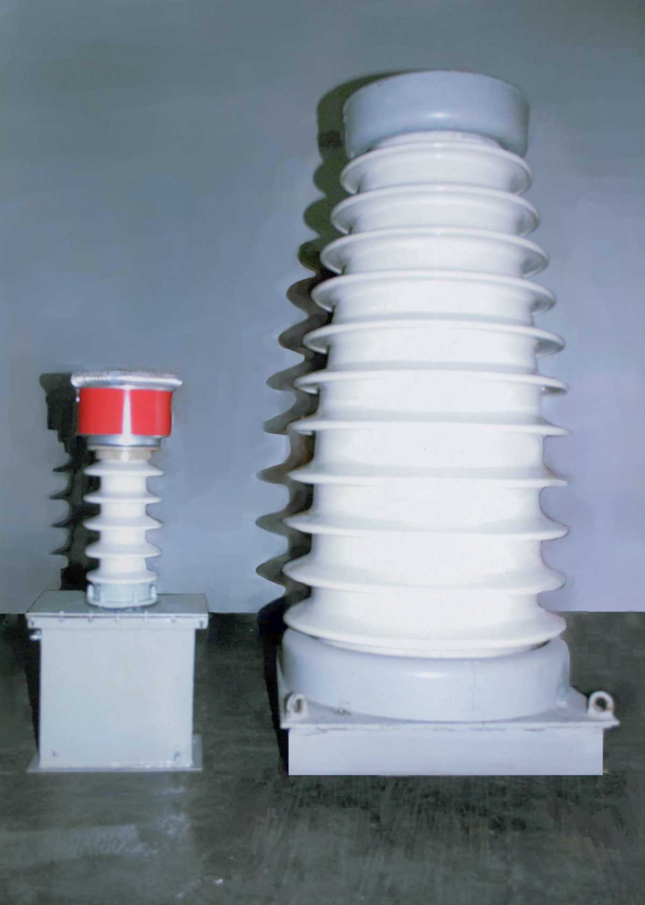
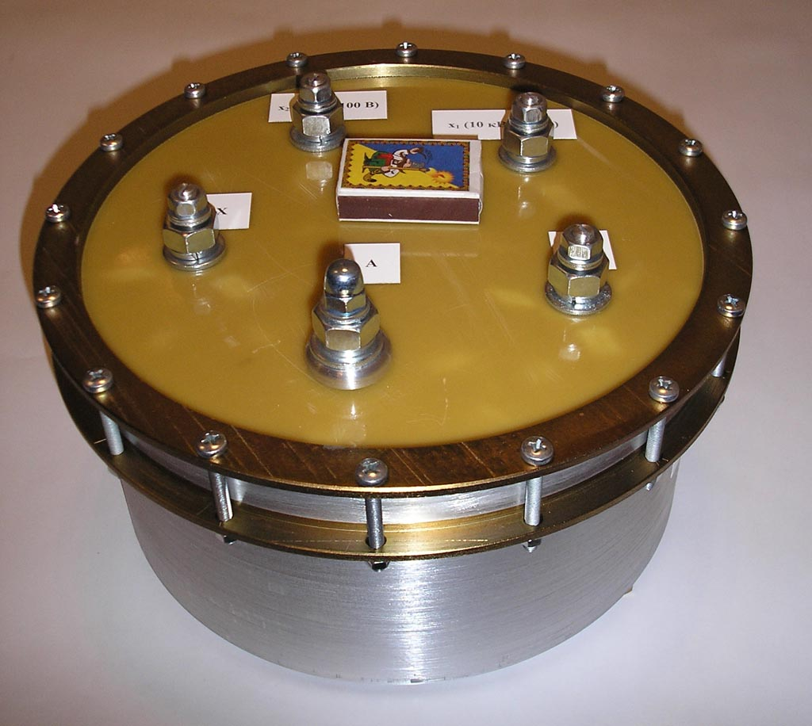
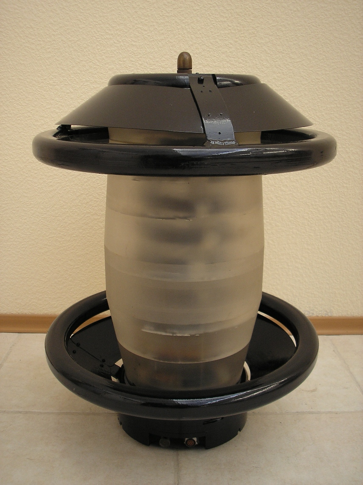
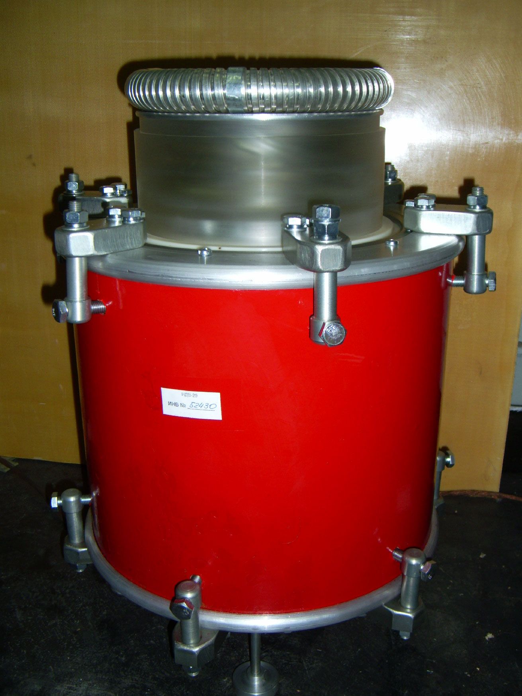
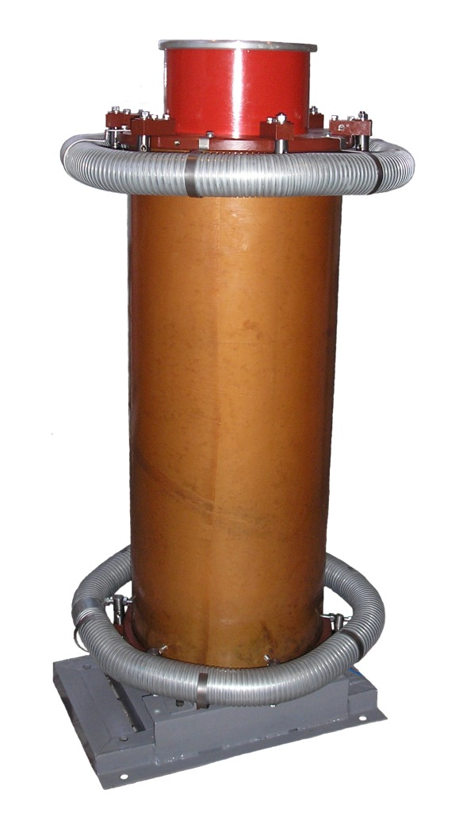
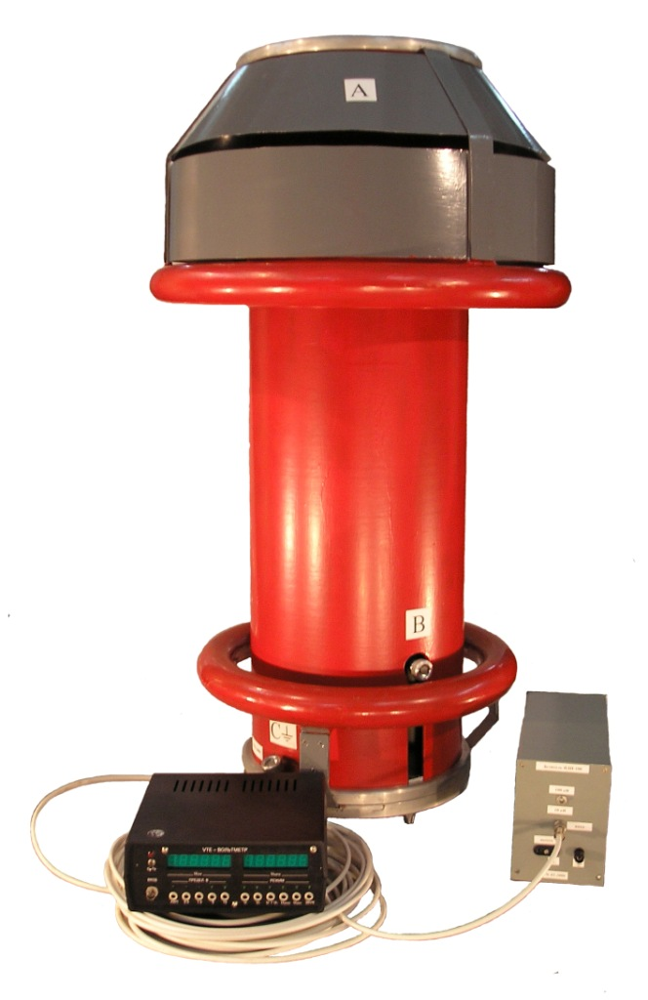
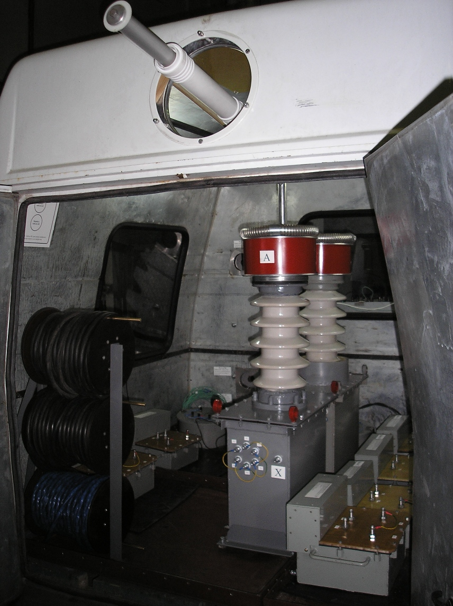

Виберіть мову
Кафедра техніки і електрофізики високих напруг
Пошук
Головні новини та події
Наукова діяльність кафедри
Кафедра виконує науково-дослідні та дослідно-конструкторські роботи за заявками підприємств та організацій. Тільки за останні роки кафедрою розроблено ряд сучасного електрообладнання високої напруги.
 В 2015 році кафедрою разом з Науковим парком "Київська політехніка" на замовлення Товариства з обмеженою відповідальністю "Львівська ізоляторна компанія" вперше в Україні за вимогами Міжнародних стандартів виготовлено установку для випробування ізоляторів на допустимий рівень радіозавад, яка призначена для випробування тарілчастих високовольтних ізоляторів на допустимий рівень радіозавад при режимах частот 0,5 та 1,0 МГц. Розроблена установка атестована Державним підприємством «Укрметртестстандарт» та знаходиться в користуванні ТзОВ "Львівська ізоляторна компанія". Установка необхідна для забезпечення можливості експортних поставок високовольтних ізоляторів, вироблених в Україні, за кордон.http://www.spark.kpi.ua/
Кафедра співпрацює з Науковим парком "Київська політехніка" – формою організації науково-інноваційного процесу, яка сприяє ефективній комерціалізації високотехнологічних розробок. Наприклад, в 2012 році кафедрою спільно з Науковим парком "Київська політехніка" на замовлення Державного підприємства "Національна енергетична компанія "Укренерго" виготовлено високовольтний подільник напруги класу 220 кВ для визначення показників якості електричної енергії у високовольтних електричних мережах. Розробка такої високовольтної установки виконана в Україні вперше та впроваджена в Державному підприємстві "Національна енергетична компанія "Укренерго".
 Мобільний еталон - трансформатор напруги ЕТН-110 - використовується в мобільних системах та лабораторіях вимірювання якості електроенергії, визначення втрат електричної енергії, метрологічної атестації систем комерційного обліку електроенергії класу 110 кВ, безпосередньо, на місці їх установлення та експлуатації. Трансформатор ЕТН-110 в декілька разів менший від свого прототипа - трансформатора ТНО-110.
 Прецизійний еталонний трансформатор напруги ПЕТН-6/10 - призначений для мобільних систем та лабораторій вимірювання якості електроенергії, визначення втрат електричної енергії, метрологічної атестації систем комерційного обліку електроенергії класів напруги 6 та 10 кВ, безпосередньо, на місці їх установлення та експлуатації.
 Високовольтний подільник напруги ВДН-75 - викристовується для експериментального визначення якості електроенергії, безпосередньо, в високовольтних електричних мережах. Використовується як обов’язковий елемент підключення електронних приладів реєстрації показників якості електроенергії до струмопроводів мереж класів 6; 10; 35; 110 кВ.
Вторинний (мобільний) еталон України класу 110 кВ - призначений для проведення метрологічних робіт з атестації високовольтних трансформаторів напруги вищої точності.
Випробувальний трансформатор напруги ВТН-180 - для випробування електрозахисних засобів класу 330 кВ за останніми вимогами ДНАОП 1.1.10-1.07-01 "Правила експлуатації електрозахисних засобів".
Вимірювач високої напруги ВВН-0,8-100М - призначений для масштабного перетворення і вимірювання високої напруги постійного і змінного струмів, атестації високовольтних випробувальних установок.
Мобільна повірочна лабораторія класів напруги 0,22…110 кВ - призначена для проведення повірки на місці експлуатації трансформаторів напруги УТН-1; НОМ-6; НТМК-6; НТМИ-6; НОМ-10; НТМК-10; НТМИ-10; ЗНОМ-35; НОМ-35; НКФ-110 за ГОСТ 8.216 (з їх фактичним навантаженням).
Загалом науково-дослідна робота кафедри сьогодні зосереджена в таких основних напрямах, як розробка сучасного малогабаритного електрообладнання високої напруги; розвиток методик випробування електричної міцності електрообладнання та створення необхідних випробувальних установок; розвиток методик захисту об’єктів енергетики від впливу грозових та комутаційних перенапруг. З цими напрямами досліджень пов’язана проблематика кандидатських і докторських дисертацій, співпраця кафедри з університетами України.
Інтерес студентів до наукових досліджень стимулюється низкою заходів, серед яких щорічна Міжнародна науково-технічна конференція молодих учених, аспірантів і студентів "Сучасні проблеми електроенерготехніки та автоматики" та інші заходи.